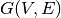
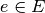
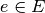
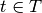
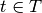
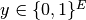
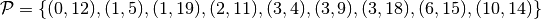
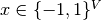
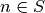
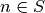

Cut problems in graphs¶
The code below initializes the graph used in all the examples of this page. It should be run prior to any of the codes presented in this page. The packages networkx and matplotlib are recquired.
We use an arbitrary graph generated by the LCF generator of the networkx package. The graph is deterministic, so that we can run doctest and check the output. We also use a kind of arbitrary sequence for the edge capacities.
import picos as pic
import networkx as nx
#number of nodes
N=20
#Generate a graph with LCF notation (you can change the values below to obtain another graph!)
G=nx.LCF_graph(N,[1,3,14],5)
G=nx.DiGraph(G) #edges are bidirected
#generate edge capacities
c={}
for i,e in enumerate(G.edges()):
c[e]=((-2)**i)%17 #an arbitrary sequence of numbers
Max-flow, Min-cut (LP)¶
Max-flow¶
Given a directed graph ,
with a capacity  on each edge ,
a source node
on each edge ,
a source node  and a sink node
and a sink node  , the max-flow problem is
to find a flow from to of maximum value. Recall that a flow
to is a mapping from
, the max-flow problem is
to find a flow from to of maximum value. Recall that a flow
to is a mapping from  to
to  such that:
such that:
- the capacity of each edge is respected:
- the flow is conserved at each non-terminal node:


Its value is defined as the volume passing from to :

This problem clearly has a linear programming formulation, which we solve below for s=16 and t=10:
maxflow=pic.Problem()
#source and sink nodes
s=16
t=10
#convert the capacities as a picos expression
cc=pic.new_param('c',c)
#flow variable
f={}
for e in G.edges():
f[e]=maxflow.add_variable('f[{0}]'.format(e),1)
#flow value
F=maxflow.add_variable('F',1)
#upper bound on the flows
maxflow.add_list_of_constraints(
[f[e]<cc[e] for e in G.edges()], #list of constraints
[('e',2)], #e is a double index (start and end node of the edges)
'edges' #set the index belongs to
)
#flow conservation
maxflow.add_list_of_constraints(
[ pic.sum([f[p,i] for p in G.predecessors(i)],'p','pred(i)')
== pic.sum([f[i,j] for j in G.successors(i)],'j','succ(i)')
for i in G.nodes() if i not in (s,t)],
'i','nodes-(s,t)')
#source flow at s
maxflow.add_constraint(
pic.sum([f[p,s] for p in G.predecessors(s)],'p','pred(s)') + F
== pic.sum([f[s,j] for j in G.successors(s)],'j','succ(s)')
)
#sink flow at t
maxflow.add_constraint(
pic.sum([f[p,t] for p in G.predecessors(t)],'p','pred(t)')
== pic.sum([f[t,j] for j in G.successors(t)],'j','succ(t)') + F
)
#nonnegativity of the flows
maxflow.add_list_of_constraints(
[f[e]>0 for e in G.edges()], #list of constraints
[('e',2)], #e is a double index (origin and desitnation of the edges)
'edges' #set the index belongs to
)
#objective
maxflow.set_objective('max',F)
#solve the problem
print maxflow
maxflow.solve(verbose=0)
print 'The optimal flow has value {0}'.format(F)
---------------------
optimization problem (LP):
61 variables, 140 affine constraints
f : dict of 60 variables, (1, 1), continuous
F : (1, 1), continuous
maximize F
such that
f[e] < c[e] for all e in edges
Σ_{p in pred(i)} f[(p, i)] = Σ_{j in succ(i)} f[(i, j)] for all i in nodes-(s,t)
Σ_{p in pred(s)} f[(p, 16)] + F = Σ_{j in succ(s)} f[(16, j)]
Σ_{p in pred(t)} f[(p, 10)] = Σ_{j in succ(t)} f[(10, j)] + F
f[e] > 0 for all e in edges
---------------------
The optimal flow has value 15.0
Let us now draw the maximum flow:
#display the graph
import pylab
fig=pylab.figure(figsize=(11,8))
node_colors=['w']*N
node_colors[s]='g' #source is green
node_colors[t]='b' #sink is blue
pos=nx.spring_layout(G)
#edges
nx.draw_networkx(G,pos,
edgelist=[e for e in G.edges() if f[e].value[0]>0],
node_color=node_colors)
labels={e:'{0}/{1}'.format(f[e],c[e]) for e in G.edges() if f[e].value[0]>0}
#flow label
nx.draw_networkx_edge_labels(G, pos,
edge_labels=labels)
#hide axis
fig.gca().axes.get_xaxis().set_ticks([])
fig.gca().axes.get_yaxis().set_ticks([])
pylab.show()
(Source code, png, hires.png, pdf)
{kind=link}
{kind=link}

The graph shows the source in blue, the sink in green, and the value of the flow together with the capacity on each edge.
Min-cut¶
Given a directed graph ,
with a capacity on each edge ,
a source node and a sink node , the min-cut problem is
to find a partition of the nodes in two sets  , such that
, such that
 , , and the total capacity of the cut,
, , and the total capacity of the cut,
 is minimized.
is minimized.
It can be seen that binary solutions  of the following linear program yield a minimum cut:
of the following linear program yield a minimum cut:

Remarkably, this LP is the dual of the max-flow LP, and the
max-flow-min-cut theorem (also known as Ford-Fulkerson theorem [1])
states that the capacity of the minimum cut is equal to the
value of the maximum flow. This means that the above LP always has
an optimal solution in which  is binary.
In fact, the matrix defining this LP is totally unimodular, from
which we know that every extreme point of the polyhedron defining the
feasible region is integral, and hence the simplex algorithm
will return a minimum cut.
is binary.
In fact, the matrix defining this LP is totally unimodular, from
which we know that every extreme point of the polyhedron defining the
feasible region is integral, and hence the simplex algorithm
will return a minimum cut.
We solve the mincut problem below, for s=16 and t=10:
mincut=pic.Problem()
#source and sink nodes
s=16
t=10
#convert the capacities as a picos expression
cc=pic.new_param('c',c)
#cut variable
d={}
for e in G.edges():
d[e]=mincut.add_variable('d[{0}]'.format(e),1)
#potentials
p=mincut.add_variable('p',N)
#potential inequalities
mincut.add_list_of_constraints(
[d[i,j] > p[i]-p[j]
for (i,j) in G.edges()], #list of constraints
['i','j'],'edges') #indices and set they belong to
#one-potential at source
mincut.add_constraint(p[s]==1)
#zero-potential at sink
mincut.add_constraint(p[t]==0)
#nonnegativity
mincut.add_constraint(p>0)
mincut.add_list_of_constraints(
[d[e]>0 for e in G.edges()], #list of constraints
[('e',2)], #e is a double index (origin and desitnation of the edges)
'edges' #set the index belongs to
)
#objective
mincut.set_objective('min',
pic.sum([cc[e]*d[e] for e in G.edges()],
[('e',2)],'edges')
)
print mincut
mincut.solve(verbose=0)
print 'The minimal cut has capacity {0}'.format(mincut.obj_value())
cut=[e for e in G.edges() if d[e].value[0]==1]
S =[n for n in G.nodes() if p[n].value[0]==1]
T =[n for n in G.nodes() if p[n].value[0]==0]
print 'the partition of the nodes is: '
print 'S: {0}'.format(S)
print 'T: {0}'.format(T)
---------------------
optimization problem (LP):
80 variables, 142 affine constraints
d : dict of 60 variables, (1, 1), continuous
p : (20, 1), continuous
minimize Σ_{e in edges} c[e]*d[e]
such that
d[(i, j)] > p[i] -p[j] for all (i,j) in edges
p[16] = 1.0
p[10] = 0
p > |0|
d[e] > 0 for all e in edges
---------------------
The minimal cut has capacity 15.0
the partition of the nodes is:
S: [15, 16, 17, 18]
T: [0, 1, 2, 3, 4, 5, 6, 7, 8, 9, 10, 11, 12, 13, 14, 19]
Note that the minimum-cut could also habe been found by using the dual variables of the maxflow LP:
>>> #capacited flow constraint
>>> capaflow=maxflow.get_constraint((0,))
>>> dualcut=[e for i,e in enumerate(G.edges()) if capaflow[i].dual[0]==1]
>>> #flow conservation constraint
>>> consflow=maxflow.get_constraint((1,))
>>> Sdual = [s]+ [n for i,n in
... enumerate([n for n in G.nodes() if n not in (s,t)])
... if consflow[i].dual[0]==1]
>>> Tdual = [t]+ [n for i,n in
... enumerate([n for n in G.nodes() if n not in (s,t)])
... if consflow[i].dual[0]==0]
>>> cut == dualcut
True
>>> set(S) == set(Sdual)
True
>>> set(T) == set(Tdual)
True
Let us now draw the maximum flow:
import pylab
fig=pylab.figure(figsize=(11,8))
node_colors=['w']*N
node_colors[s]='g' #source is green
node_colors[t]='b' #sink is blue
pos=nx.spring_layout(G)
#edges (not in the cut)
nx.draw_networkx(G,pos,
edgelist=[e for e in G.edges() if e not in cut],
node_color=node_colors)
#edges of the cut
nx.draw_networkx_edges(G,pos,
edgelist=cut,
edge_color='r')
#hide axis
fig.gca().axes.get_xaxis().set_ticks([])
fig.gca().axes.get_yaxis().set_ticks([])
pylab.show()
(Source code, png, hires.png, pdf)
{kind=link}
{kind=link}

On this graph, the source in blue, the sink in green, and the edges defining the cut are marked in red.
Multicut (MIP)¶
Multicut is a generalization of the mincut problem, in which several pairs
of nodes must be disconnected. The goal is to find a cut of minimal
capacity, such that for all pair  ,
there is no path from to t in the graph where the edges of the cut
have been removed.
,
there is no path from to t in the graph where the edges of the cut
have been removed.
We can obtain a MIP formulation of the multicut problem
by doing a small modification the mincut LP.
The idea is to introduce a different potential for every node
which is the source of a pair in  :
:

and to force the cut variable to be binary.

Unlike the mincut problem, the LP obtained by relaxing the integer constraint  is not guaranteed to have an integral solution (see e.g. [2]). We solve the multicut problem below, for the terminal pairs .
multicut=pic.Problem()
#pairs to be separated
pairs=[(0,12),(1,5),(1,19),(2,11),(3,4),(3,9),(3,18),(6,15),(10,14)]
#source and sink nodes
s=16
t=10
#convert the capacities as a picos expression
cc=pic.new_param('c',c)
#list of sources
sources=set([p[0] for p in pairs])
#cut variable
y={}
for e in G.edges():
y[e]=multicut.add_variable('y[{0}]'.format(e),1,vtype='binary')
#potentials (one for each source)
p={}
for s in sources:
p[s]=multicut.add_variable('p[{0}]'.format(s),N)
#potential inequalities
multicut.add_list_of_constraints(
[y[i,j]>p[s][i]-p[s][j]
for s in sources
for (i,j) in G.edges()], #list of constraints
['i','j','s'],'edges x sources')#indices and set they belong to
#one-potentials at source
multicut.add_list_of_constraints(
[p[s][s]==1 for s in sources],
's','sources')
#zero-potentials at sink
multicut.add_list_of_constraints(
[p[s][t]==0 for (s,t) in pairs],
['s','t'],'pairs')
#nonnegativity
multicut.add_list_of_constraints(
[p[s]>0 for s in sources],
's','sources')
#objective
multicut.set_objective('min',
pic.sum([cc[e]*y[e] for e in G.edges()],
[('e',2)],'edges')
)
print multicut
multicut.solve(verbose=0)
print 'The minimal multicut has capacity {0}'.format(multicut.obj_value())
cut=[e for e in G.edges() if y[e].value[0]==1]
print 'The edges forming the cut are: '
print cut
---------------------
optimization problem (MIP):
180 variables, 495 affine constraints
y : dict of 60 variables, (1, 1), binary
p : dict of 6 variables, (20, 1), continuous
minimize Σ_{e in edges} c[e]*y[e]
such that
y[(i, j)] > p[s][i] -p[s][j] for all (i,j,s) in edges x sources
p[s][s] = 1.0 for all s in sources
p[s][t] = 0 for all (s,t) in pairs
p[s] > |0| for all s in sources
---------------------
The minimal multicut has capacity 49.0
The edges forming the cut are:
[(1, 0), (1, 4), (2, 16),
(2, 8), (3, 4), (5, 11),
(7, 8), (9, 8), (10, 11),
(13, 16), (13, 12),
(13, 14), (17, 16)]
Let us now draw the multicut:
import pylab
fig=pylab.figure(figsize=(11,8))
#pairs of dark and light colors
colors=[('Yellow','#FFFFE0'),
('#888888','#DDDDDD'),
('Dodgerblue','Aqua'),
('DarkGreen','GreenYellow'),
('DarkViolet','Violet'),
('SaddleBrown','Peru'),
('Red','Tomato'),
('DarkGoldenRod','Gold'),
]
node_colors=['w']*N
for i,s in enumerate(sources):
node_colors[s]=colors[i][0]
for t in [t for (s0,t) in pairs if s0==s]:
node_colors[t]=colors[i][1]
pos=nx.spring_layout(G)
nx.draw_networkx(G,pos,
edgelist=[e for e in G.edges() if e not in cut],
node_color=node_colors)
nx.draw_networkx_edges(G,pos,
edgelist=cut,
edge_color='r')
#hide axis
fig.gca().axes.get_xaxis().set_ticks([])
fig.gca().axes.get_yaxis().set_ticks([])
pylab.show()
(Source code, png, hires.png, pdf)
{kind=link}
{kind=link}

On this graph, the pairs of terminal nodes are denoted by dark and light colors of the same shade (e.g. dark vs. light green for the pairs (3,4),(3,9), and (3,18)), and the edges defining the cut are marked in red.
Maxcut relaxation (SDP)¶
The goal of the maxcut problem is to find
a partition (S,T) of the nodes of an undirected graph G(V,E),
such that the capacity of the cut,
 is maximized.
is maximized.
Goemans and Williamson have designed a famous 0.878-approximation
algorithm [3] for this NP-hard problem based on semidefinite programming.
The idea is to introduce a variable  where
 takes the value +1 or -1 depending on wheter 
or
takes the value +1 or -1 depending on wheter 
or  . Then, it can be seen that the value of the cut
is equal to
. Then, it can be seen that the value of the cut
is equal to  , where
, where  is the Laplacian
of the graph. If we define the matrix
is the Laplacian
of the graph. If we define the matrix  , which is positive
semidefinite of rank 1, we obtain an SDP by relaxing the
rank-one constraint on
, which is positive
semidefinite of rank 1, we obtain an SDP by relaxing the
rank-one constraint on  :
:

Then, Goemans and Williamson have shown that if we project the solution
onto a random hyperplan, we obtain a cut whose expected capacity is at least
0.878 times the optimum. Below is a simple implementation of their algorithm:
import cvxopt as cvx
import cvxopt.lapack
import numpy as np
#make G undirected
G=nx.Graph(G)
#allocate weights to the edges
for (i,j) in G.edges():
G[i][j]['weight']=c[i,j]+c[j,i]
maxcut = pic.Problem()
X=maxcut.add_variable('X',(N,N),'symmetric')
#Laplacian of the graph
L=pic.new_param('L',1/4.*nx.laplacian(G))
#ones on the diagonal
maxcut.add_constraint(pic.tools.diag_vect(X)==1)
#X positive semidefinite
maxcut.add_constraint(X>>0)
#objective
maxcut.set_objective('max',L|X)
print maxcut
maxcut.solve(verbose = 0)
print 'bound from the SDP relaxation: {0}'.format(maxcut.obj_value())
#---------------------------#
#RANDOM PROJECTION ALGORITHM#
#---------------------------#
#Cholesky factorization
V=X.value
cvxopt.lapack.potrf(V)
for i in range(N):
for j in range(i+1,N):
V[i,j]=0
#random projection algorithm
#Repeat 100 times or until we are within a factor .878 of the SDP optimal value
count=0
obj_sdp=maxcut.obj_value()
obj=0
while (count <100 or obj<.878*obj_sdp):
r=cvx.normal(20,1)
x=cvx.matrix(np.sign(V*r))
o=(x.T*L*x).value[0]
if o>obj:
x_cut=x
obj=o
count+=1
print 'value of the cut: {0}'.format(obj)
S1=[n for n in range(N) if x[n]<0]
S2=[n for n in range(N) if x[n]>0]
cut = [(i,j) for (i,j) in G.edges() if x[i]*x[j]<0]
#we comment this because the output in unpredicatable for doctest:
#print 'partition of the nodes:'
#print 'S1: {0}'.format(S1)
#print 'S2: {0}'.format(S2)
---------------------
optimization problem (SDP):
210 variables, 20 affine constraints, 210 vars in 1 SD cones
X : (20, 20), symmetric
maximize 〈 L | X 〉
such that
diag(X) = |1|
X ≽ |0|
---------------------
bound from the SDP relaxation: 478.2074...
value of the cut: 471.0
Let us now draw this cut:
#display the cut
import pylab
fig=pylab.figure(figsize=(11,8))
pos=nx.spring_layout(G)
node_colors=[('g' if n in S1 else 'b') for n in range(N)]
nx.draw_networkx(G,pos,
edgelist=[e for e in G.edges() if e not in cut],
node_color=node_colors)
nx.draw_networkx_edges(G,pos,
edgelist=cut,
edge_color='r')
#hide axis
fig.gca().axes.get_xaxis().set_ticks([])
fig.gca().axes.get_yaxis().set_ticks([])
pylab.show()
(Source code, png, hires.png, pdf)
{kind=link}
{kind=link}

On this graph, the red edges are those defining the cut, and the nodes are blue or green depending on the partition they belong to.
References¶
- “Maximal Flow through a Network”, LR Ford Jr and DR Fulkerson, Canadian journal of mathematics, 1956.
- “Analysis of LP relaxations for multiway and multicut problems”, D.Bertsimas, C.P. Teo and R. Vohra, Networks, 34(2), p. 102-114, 1999.
- “Improved approximation algorithms for maximum cut and satisfiability problems using semidefinite programming”, M.X. Goemans and D.P. Williamson, Journal of the ACM, 42(6), p. 1115-1145, 1995.